Two Wheels, One Soul
Freedom on every pedal stroke
Freedom on every pedal stroke
| Illustration | Part | Description | |
|---|---|---|---|
| 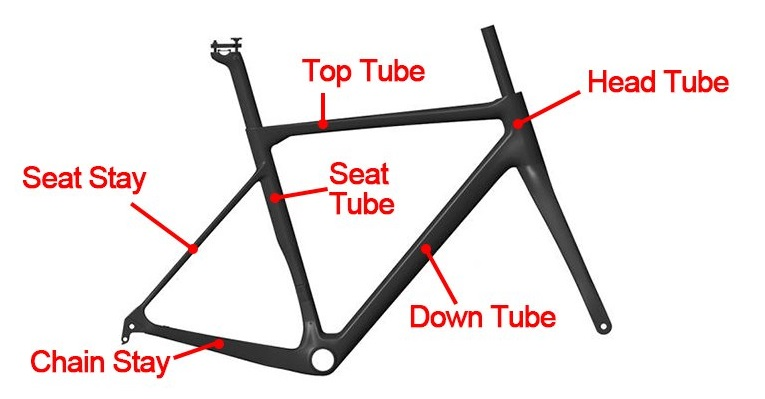 | Frame | Structural Design: Different structural design will give us different ridiing positions, which has greater impact on the comfort of cycling. There are two ways to mark the frame size: 1) In letters: XS, S, M, and so on 2) Specific values: 15.5 inches, 17 inches, 19 inches, etc. NOTE: Even choosing a frame of the same number or letter, the specs of different brands may be different. The corresponding height range could be slightly different and cannot be generalized. If we choose the unsuitable frame size, it will not only affect the strength of the rider, make the cyling more laborious, but also easy to cause back pain, hand pain and other injuries. Frame Material: An important reference to distinguish the luxury, mid-range and entry-lever bicycles. At present, there are mainly four types of bike frames on the market: steel bike frame, aluminum bike frame, carbon fiber bike frame and titanium bike frame. For different frame materials, its strength, corrosion resistance, and manufacturing costs are different. In addition, steel and aluminum are currently the most widely used materials for bike frames in the market, mainly because of the low manufacturing cost and mature processing technology. Steel frames are usually used for entry-lever bicycles, aluminum frames are generally used for mid-range bikes, and carbon fiber frames & titanium frames are mostly used for luxury bicycles. |
|
| 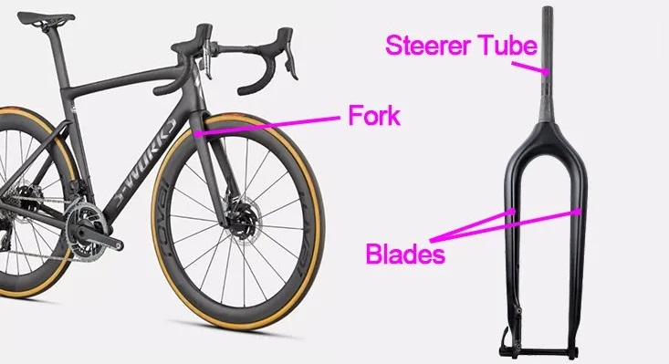 | Fork | The top of the bicycle fork is connected with the steering parts and the bottom of it is connected with the front wheel axle. It is mainly used to install the front wheel and the front brake. Two blades run from the bottom of the steerer tube, down either side of the wheel. These blades connect to the front wheel axle using their dropouts. These two blades join together above the front wheel at the fork crown, which sits just below the steerer tube. The steerer tube is part of the bike fork that runs through the head tube and attaches to the stem. There are rigid forks and suspension forks available. The rigid forks are generally used for urban bikes and road bikes and provide increased speed on flat surfaces, while the suspension forks are mostly used for mountain bikes and allow you to navigate harsh terrain whilst dampening and reducing the impact felt when tackling obstacles on the trail. The rigid forks are mainly made of steels, aluminum, carbon fiber, and titanium. The suspension forks mainly have material of steel, aluminum, and magnesium alloy. |
|
| 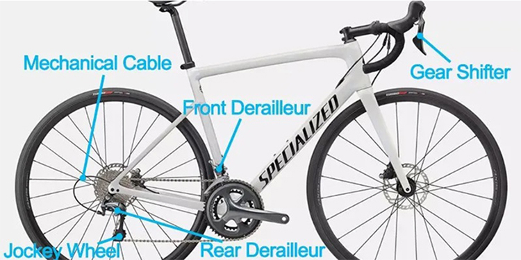 | Shifting | There are mechanical shifting system and electronic shifting system for you to choose. The main brands are Shimano, Sram, Campagnolo, etc.. The mechanical shifting parts are composed of gear levers, front derailleur, rear derailleur, and mechanical cables. The electronic shifting parts are composed of electronic switches, front derailleur, rear derailleur, and battery pack. The shifting parts correspond to different gear ratio in different position, which can improve the comfort of cycling. |
|
 |
Steering | The steering parts realize the steering function by controlling the fork direction. It is composed of handlebars, stem, grips, headset, and spacers, which are installed on the steerer tube of fork to control the rotation of it. There are steel, aluminum, or carbon fiber materials for the stem and handlebars, while the aluminum material is used more commonly. The headset spacers are made of plastic or aluminum, which are used to adjust the height of the handlebar. The headset is divided into ball bearing headset and roller bearing headset, which is placed inside the head tube of the frame. |
|
| 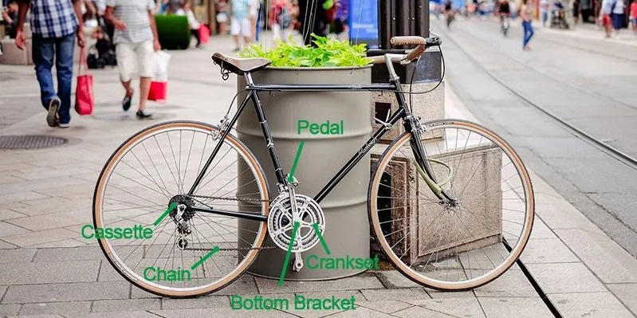 | Drivetrain | The role of the drivetrain parts is to transfer the pedaling force of the rider to the rear wheel, which provides the power for the bicycle to move forward. The higher the efficiency of its transmission, the more labor-saving the cyclist. The drivetrain parts are composed of crankset, pedals, bottom bracket, chain, and cassette. We should pay attention to the following poins when choosing them: 1) Is the chain the appropriate speed? 2) Does the cassette support the current shifting parts? 3) Does the crankset fit the front derailleur and will it too large for the frame? | |
| 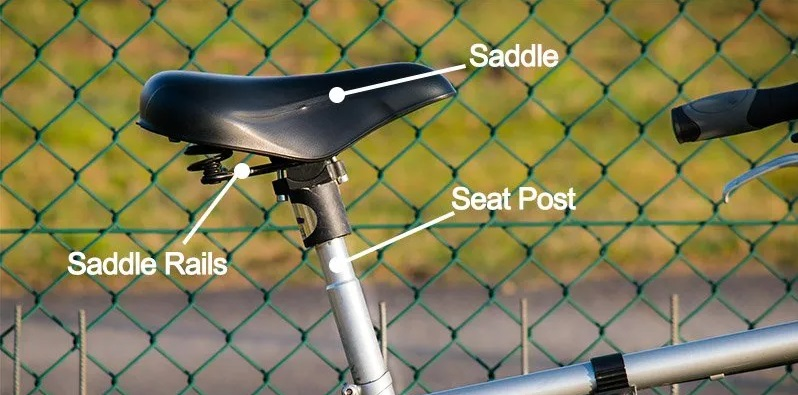 | Seat | The seat parts are composed of a seat post and a saddle. The riding posture can be adjusted by adjusting the insertion depth of the seat post and the forward or back positions of the saddle. The seat post are made of steel, aluminum, or carbon fiber. |
|
| 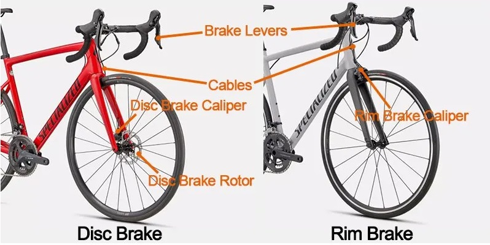 | Brakes | The brakes are the braking devices of the bicycle, which is one of the essential components for bicycle. When choosing bikes, we should put the braking reliability in the first place. There are two widely used braking ways: rim brake and disc brake. And the disc brake can be divided into mechanical disc brake & hydraulic disc brake. The rim brake is widely used on classic or vintage bicycles, but less used on modern bicycles. Compared with hydraulic disc brake, the mechanical disc brake has relatively low manufacturing cost, so price is cheaper. However, the brake performance of hydraulic disc brake is better and the handling is smoother and more consistent. The brakes are composed of disc brake rotor (for disc brake), calipers, cable, and brake levers. Generally the brake levers are combined with gear shifters to become a single pair of levers, which have the ability to control the brakes or change gears. In the past, hub brakes were common on city and commuter bikes. While riding a bike with a hub brake, pedal backwards and the hub brake (contained with the rear wheel's hub) will engage and slow you down. |
|
| 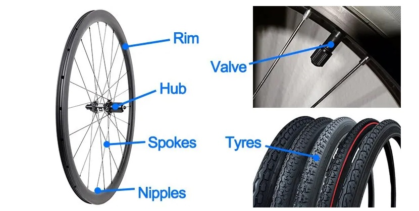 | Wheels & Tyres | The wheels consist of rims, hubs, spokes, nipples, and valves. After fitting the tyres, they can drive the bicycle forward by rolling back and forth. The material of rim has the steel, aluminum, and carbon fiber. The weight decreases in turn, and the price increases in order. The hubs are divided into steel bearings & ceramic bearings. The ceramic bearings are better in performance, roll somoother and create less rolling resistance with less friction. Most of the spokes on the market are commonly made of steel. Some manufacturers have also launched better carbon spokes, which have unmatched lightweight, stiffness, strength, and allows you to feel your bike more responsive with higher stiffness-to-weight ratio. When choosing a bicycle tyre, first of all, it is necessary to pay attention to the correct selection of tyre size to avoid being unable to install. Second, we should select the suitable tread pattern of tyres according to use. | |
| Illustration | Part | Description | |
|---|---|---|---|
| 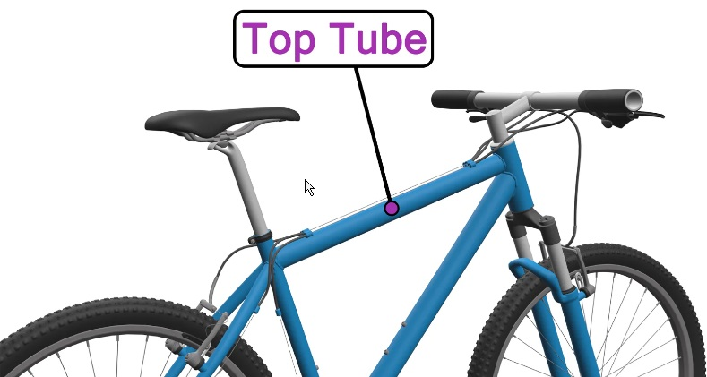 | Top Tube | Also referred to as cross-bar, is part of a bike frame that connects the seat tube to the top of the head tube and runs parallel to the ground. The length of your top tube dictates the position you'll be riding in while cycling. A longer top tube provides a more aerodynamic and aggressive riding position, whilst a shorter top tube sacrifices aerodynamics for increased comfort. | |
| 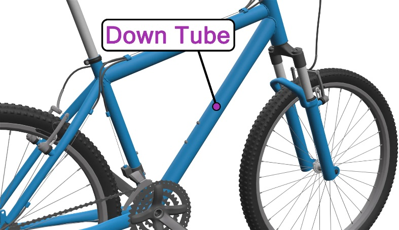 | Down Tube | Often feature mounting points for water bottle cages and other accessories. Additionally, the rear derailleur cablesnormally run along the underside of the down tube, whilst more modern bikes house these cables inside the down tube. | |
| 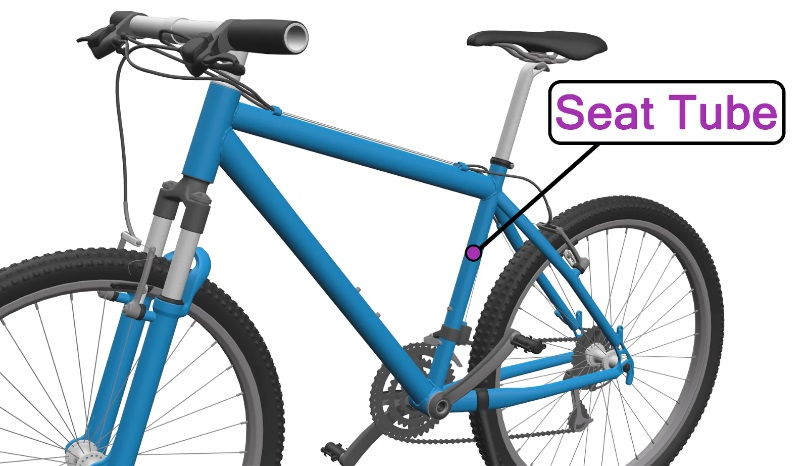 | Seat Tube | Runs up from the bottom bracket shell to the saddle, connecting the seat stays to the top tube, and the chainstays to the down tube. A seatpost is inserted into the top of the seat tube, allowing you to sit down on your bike. The angle of a seat tube greatly affects the overall geometry and riding position that different bikes provide. A seat tube with a steep angle improves pedalling efficiency and aerodynamics, but reduces steering control and decreases stability. A seat tube with a slack angle will provide a more stable and comfortable ride, but also reduce aerodynamics and make pedalling less efficient. | |
| 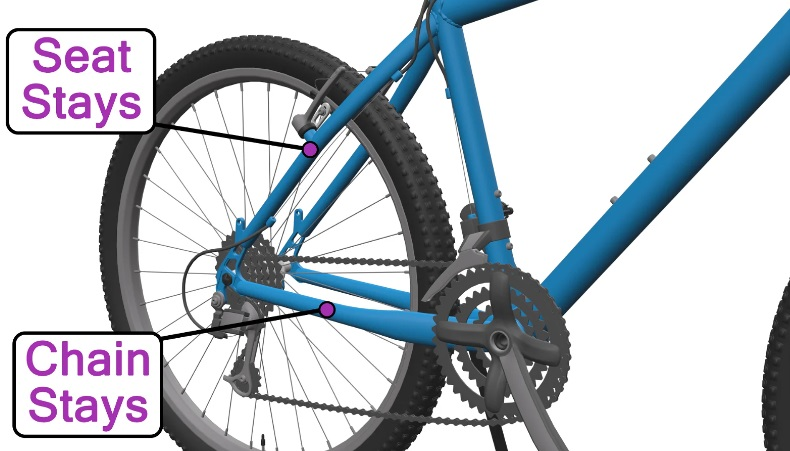 | Seat Stays | Part of a bicycle frame that runs diagonally from the top of the seat tube to the rear dropouts. Run down either side of the rear wheel and are joined just above the wheel by a bridge or brace, increasing the frame's rigidity. Most of the time, this bridge provides mounting points for brake callipers, fenders, or pannier racks. However, some seat stays provide their own brake mounting points, these are commonly found on bikes that use cantilever or V brakes. | |
| Chain Stays | Connect the rear dropouts to the bottom bracket shell and run on either side of the rear wheel, similarly to the seat stays. Because the bicycle chain runs above the chainstays, many cyclists protect their chainstays with helicopter tape or a chainstay protector sleeve. These measures prevent dents and scratches on the chainstays when travelling on uneven terrain. | ||
| 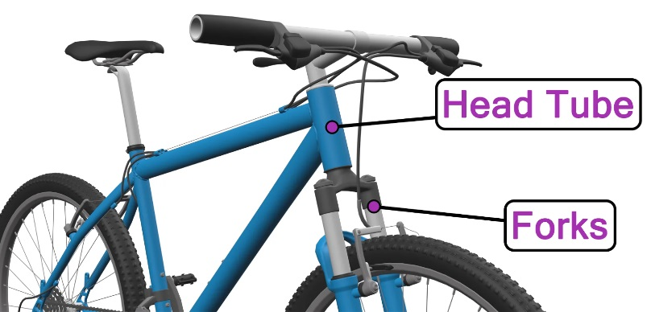 | Head Tube | The foremost part of a bike frame. The head tube houses the fork steerer tube and allows it to pivot freely on two internal sets of bearings (see headset). Rear brake cables tend to run along the underside of the top tube, whilst newer bikes house these cables inside the top tube. | |
| 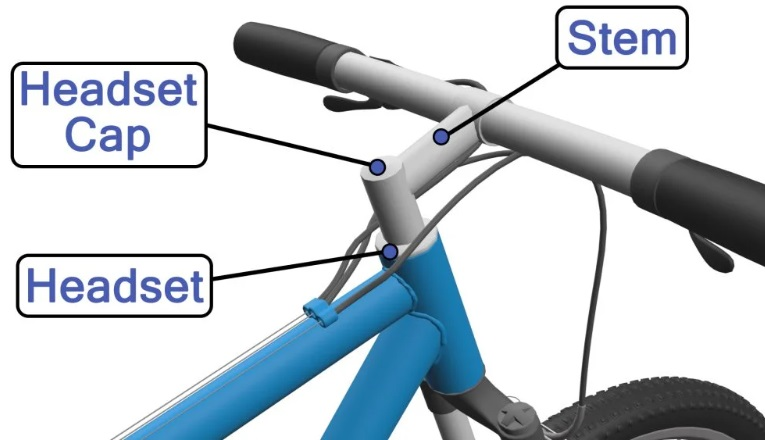 | Headset | A rotatable bicycle component that sits on your fork's steerer tube (above and below your head tube). Made up of two cups. Each cup houses a set of bearings that allow your handlebars to turn smoothly. A top cap is another key part of the headset, this is used to preload the headset before fixing the stem in place. There are several different types of headsets available. Two of the most common are the Integrated System & threaded headsets. |
|
| Headset Cap | Also called top caps and stem caps are a bicycle components that are used to preload (exert pressure) the headset. Sit on the top of the fork steerer tube and are tightened (before tightening the stem) until there is no play or movement in the headset. Once the stem cap is tightened correctly, the stem can be adjusted and tightened. |
||
| Stem | One of the most important parts of a bike. It attaches the handlebars to the steerer tube of your front fork. Because the stem is directly attached to the steerer tube, when the handlebars are turned, the front fork rotates with them, chaning the direction of travel whilst cycling. Some older stems are called quill stems which expands when tightened inside the fork steerer tube. Most modern stems are front-loaded and have multiple screws so that you can remove your handlebars without having to remove the bar tape, brakes, and gear shifters. |
||
| 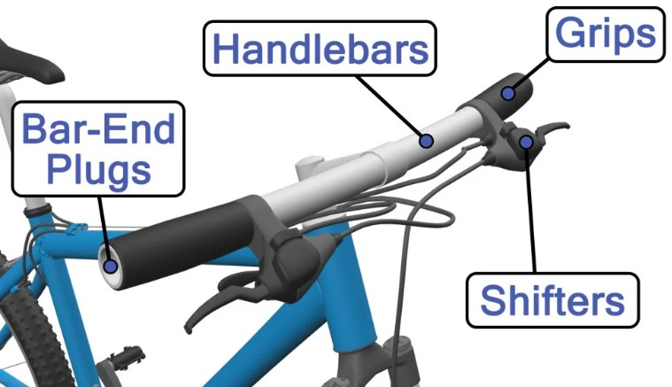 | Handlebars | One of the most crucial parts of your bike's anatomy. These are the bars that you hold onto whilst cycling and allow you to steer. Also, it hold the breaks and gear shifters, making them the cockpit of your bike. The handlebars of your bike are attached to the stem, which holds them in place. Some more modern bikes use fully integrated handlebars which combine the handlebars and stem into one single component. There are many handlebar models available, each suitable for different riding styles and providing different benefits. |
|
| Brake Levers | Found on the handlebars. A small cable that is attached to the inside of each lever. When the brake lever is squeezed, the cable is pulled tight and causes the brake calliper to pinch the wheel rim or disc rotor, slowing the bike down or preventing it from moving. Many modern bikes uses STIs, which sounds questionable, but actually stands for Shimano Total Integration. STIs work just like normal brake levers but also have the ability to change gears compared to separate brake and gear mechanisms. These are often referred to as shifters. |
||
| Grips & Bar Tape | When it comes to controlling your bike, the grips or bar tape you use is fairly important. Typically grips are found on MTBs, BMXs, hybrids, and several other types of bikes. Road bikes and other road-orientated bicycles tend to use bar tape. Grips tend to be made from textured rubber, which allows you to keep hold of your handlebars without having to squeeze too tight. Grips also help to dampen vibrations, increasing your steering control. Bar tape is much the same, it offers increased grip, cushioning and control of your handlebars. You'll probably want thicker, more cushioned grips or bar tape if you take long bike rides. These will keep your hands comfortable whilst cycling and make sure you maintain control of your bike. |
||
| Bar-End Plugs | Also known as handlebar plugs, are small plugs that slot into the end of your handlebars. End-plugs are installed to prevent injury in case of a fall or crash. Open-end handlebars are sharp and can easily puncture the skin. Many cyclists have suffered fatal accidents where open-ended handlebars pierced through their abdomens, damaging vital organs. |
||
| 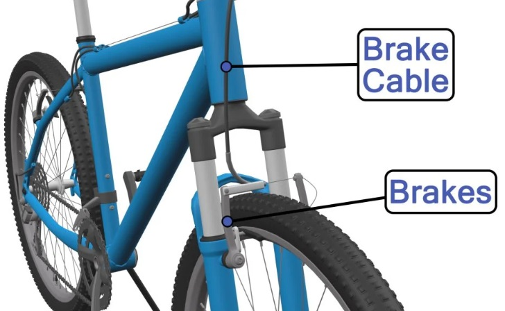 | Brake Cables | Play a vital role in controlling your bike's speed as they connect to the brake levers, allowing your brakes to be activated with a squeeze of the lever. As you may already know, mechanical brake cables use an outer housing that protects the brake cable and allows it to move freely inside. Brake cables are typically 1.5-1.6mm in diameter and come with different heads to suit vairous cycling disciplines. | |
| 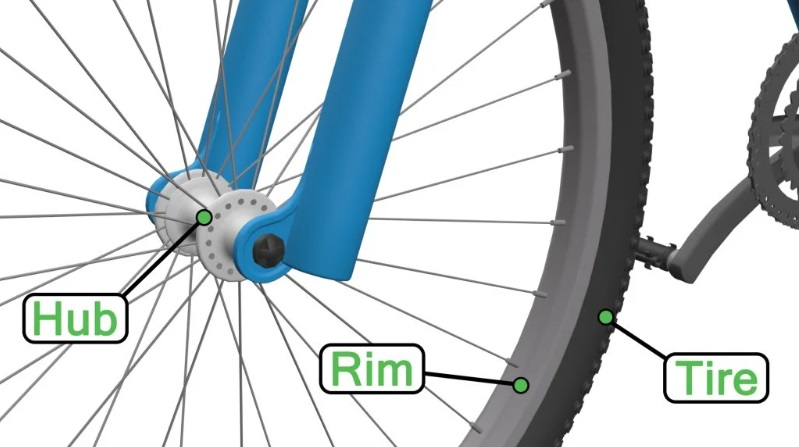 | |||
| Hubs | Found at the center of either wheel (front and back) and contain the bearings that allow your wheels to rotate freely. Made up of five key parts: 1) Hub Shell - The outer shell of the hub, often made from aluminum that houses the internal components and provides fixing points for spokes. 2) Axle - Runs through the center of the hub and sits upon the internal bearings, which allow it to rotate. There are two main types of hub axles, quick release axles and through axles. Axles also attach your wheel to the dropouts of your bike. 3) Ball Bearings - Sit inside the hub shell cup and allow the wheel to rotate smoothly. If your wheel isn't rotating properly, then a likely cause of this is that your ball bearing are worn out. 4) Cones - Found on adjustable hubs and work alongside lock nuts. Cones plays a part in tightening or loosening the hub's bearings. If your cone is too loose, the hub may have play in it, and if the cone is fitted too tightly, the wheel will not spin freely. 5) Lock Nut - Used to lock the hub's cones win place after adjusting them to the correct level. Once the lock nut is tightened, it will hold the cone in place. However, be careful not to overtighten the lock nut as you may end up tightening your cone. |
||
| Rims | Come in many shapes and sizes and nowadays tend to be made from aluminum. Part of a bike wheel that the tires attach to. Spoke nipples are threaded through the rim, and screw onto the spokes, holding the wheel together. Tires are attached to the rim. Clincher tires attach to clincher rims which house an inner tube. Tubular tires attach to tubular rims and encapsulate the inner tube. Wider, thicker rims tend to be stronger, whilst thin, lightweight rims provide increased aerodynamics and speed. Before the invention of disc brakes, most bike rims had a flat braking surface that the brake pads squeeze to lower riding speed. Bikes that use disc brakes do not require a braking surface and instead use disc rotors that serve the same purpose. |
||
| Tires | Part of a bike wheel that makes contact with the ground whilst the wheels roll. Different types of bikes use different tires. Mountain bikes use wide, heavily treaded tires that provide vibration dampening and increased traction. Road bikes use thinner tires that have minimal tread, providing decreased rolling resistance. There are three main types of bike tires: 1) Clincher Tires - The vast majority of bicycles use clincher tires, which work in conjunction with and are attached to clincher rims by their two inner metal beads. An inner tube sits inside a clincher tire which is inflated before riding. 2) Tubular Tires - Commonly used by road bikes and are designed for racing. Because tubular tires are glued to the rims, they aren't limited by the rim's sidewalls. This means tubular tires provide better shock absorption than clincher tires of the same size. 3) Tubeless Tires - Can be fitted to most clincher wheels but may require a special rim strip to keep the tire airtight. As you probably figured, tubeless tires don't use an inner tube and are filled with sealant to encourage an airtight seal with the rim. |
||
| 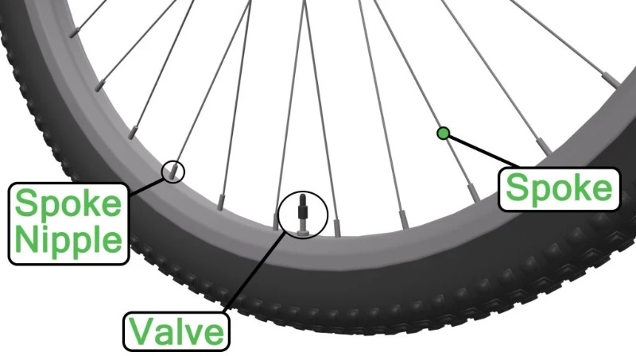 | |||
| Spokes | Rods that connect the rim of a bicycle wheel to the hub. Spokes bear the weight of the rider and bike, so they must be installed and tensioned properly. Over-tightening bicycle spokes can damage the rim, hubs, and spoke nipples of your wheel. Poorly-tensioned spokes can also cause the wheel to be misshapen (often egg-shaped). Adjusting the spokes of a wheel to roughly the sme tension will provide a strong, reliable wheel. To find the ideal spoke tension of your wheel, check the recommended tension with your rim manufacturer. |
||
| Spoke Nipples | Pass through the wheel rim and are tightened onto the end of the spoke. As the spoke nipple is tightened, the tension of the spoke increases, increasing the tension on the hub. Since spokes and spoke nipples need to have the same thread, spokes are normally supplied with matching threaded nippples. |
||
| Valves | Air inlets that allow you to inflate your tires and hold a constant pressure to ride upon. Historically, there were many different valve types, but Schrader and Presta valves are the two main options nowadays. Schrader valves are the same valves you find on car tires and motorcycles. To inflate a Schrader tire, the spring-loaded pin in the center of the valve must be depressed. Once this pin is pushed down, the valve is open, and the tire can be inflated. Presta valves are mainly used by road bikes. Presta vales are thinner than Schrader valves and seal tightly on air pressure alone. This means they don't need to use a complex valve, reduing their overall weight. |
||
| 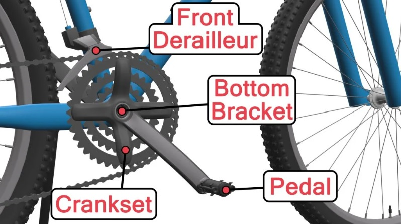 | |||
| Crankset / Chainset | Comprises three integral parts of a bike's drivetrain: cranks arms, chainrings, and a bottom bracket. The crankset is the part of a bicycle that transfers the rotation of your legs to your rear wheel through the chain. Single, double, and triple are the three formats that cranksets come in; these formats relate to the number of chainrings the crankset employs. Pedals are attached to the crank arms, which allows the rider to turn the chainset. |
||
| Bottom Bracket | Bicycle component that sits inside the bottom bracket shell at the bottom of your bike frame and connects either side of the crankset using its spindle. Contains ball bearings that allow the central spindle and cranks to rotate freely whilst pedaling. Cheap bottom brackets will provide around 8000 km (5000 miles) of cycling. Of course, this figure will change depending on riding conditions and how often you carry out bike maintenance. |
||
| Pedals | Part of a bike that connects the rider to the drivetrain. Act as a platform for you to stand on and push whilst cycling to provide power to your back wheel. Come in many different types. Platform pedals are the most common type of bike pedal and are suited for recreational and non-competitive cycling. For competitive and more intense cycling, cyclists often opt for clipless pedals. Clipless pedals require special shoes that connect directly to the pedals and increase pedalling efficiency by up to 10%. |
||
| Front Derailleur | Key part of bicycle anatomy. When tackling a big hill or hitting flat roads, the front derailleur is the part of your bike that allows you to shift up and down on your chainrings, reducing or increasing the difficulty of pedalling. Only found on bicycles with more than one chainring. Bicycles with a 1x drivetrain setup use a single chainring and therefore do not need a front derailleur. Front derailleurs are attached to your bike's frame with a bracket or clamp and are operated using your gear shifters. |
||
| 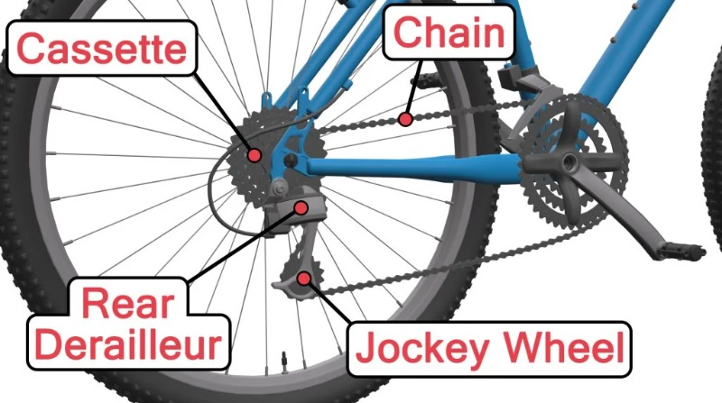 | |||
| Chain | Component of a bike that transfers the rotation of the crankset (from pedalling) to the rear wheel of your bike. Sits on the chainrings and the cassette of the rear wheel. When pedalling, the chain moves in motion with both of these components rotating the back wheel. Normally you can expect a standard bicycle chain to last 3,200-4000km (2,000-2,500 miles) before needing to be replaced. However, bicycle chains need to be regularly cleaned and lubricated to maintain reliability and efficiency. When changing gear, the bicycle chain is shifted on the chainrings and cassette by the derailleurs. |
||
| Rear Derailleur | Bicycle component that transfers the chain between the sprockets of the cassette on the rear wheel. When shifting to smaller sprockets on a cassette, the bicycle chain has more slack. Subsequently, the rear derailleur plays another role in maintaining chain tension when shifting through your rear cogs. |
||
| Jockey Wheel | The rear derailleur on a bicycle contains two similar jockey wheels, but either jockey wheel plays a different role. The upper jockey wheel, commonly called the "guide pulley" is in charge of shifting gears and guides the chain across the sprockets on the cassette. The lower jockey wheel, or tension pulley, controls and maintains chain tension when shifting gears. |
||
| Cassette / Cogset | Essential component of the bicycle drivetrain and is made up of a group of sprockets (cogs) located on the freehub of the rear wheel. These sprockets can be shifted through, increasing or decreasing the torque required to pedal, subsequently affecting the bike's speed. Modern bicycle cassettes normally use between 8 to 11 sprockets, whilst other cassettes are available with 5 to 13 sprockets. |
||
| 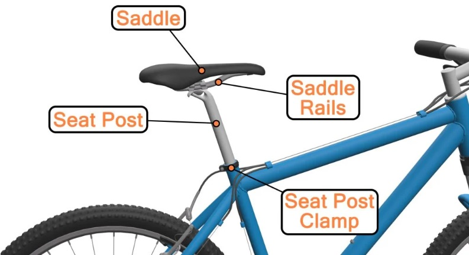 | |||
| Saddle / Bike Seat | A vital bike part; as a point of contact, you sit on your saddle whilst riding. Saddles come in many shapes and sizes. Some saddles are wider, with increased padding for extra comfort, while others focus on speed, minimizing padding and width to keep weight to a minimum and avoiding thigh chafing. |
||
| Saddle Rails | Two parallel rails that run run along the underside of your bike seat. These rails are connected to the top of the seatpost and can be made from a wide range of materials. On the saddle rails, you'll find fore and aft measurements. These are used to determine correct saddle positioning. |
||
| Seat Post | Different names: seat pillars, seat pins, saddle posts, and saddle pillars; post that extends from the bike seat tube and attaches to the underside of the saddle. Seatposts are adjustable in height, allowing cyclists to optimise their bike's geometry to their desired riding position. When adjusting a seatpost, it's improtant to pay attention to minimum insertion markings on the seat post tube. Seat posts that are over-extended can easily damage a bicycle. |
||
| Seat Post Clamp | Found at the top of the bicycle seat tube. These clamps are a metal band or collar tha tightens the top of the seat tube, holding the seat post in place. Whilst most seat post clams use a band or collar mechanism, others may use a single bolt to tighten the seat post. |
||